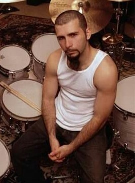

Baixista e Vocalista
Shavarsh Robert Odadjian, conhecido como Shavo, nasceu em Yerevan, Armenia, em 22 de abril de 1974. Mudou-se para os EUA com a familia aos cinco anos. Em 1993, entrou para a banda Soil como empresario e logo se tornou o baixista do que viria a ser o System of a Down.
Shavo tambem e DJ, atuando com o nome DJ Tactic, e ja participou de eventos em Los Angeles. Como diretor, comandou videoclipes como “Aerials”, “Toxicity”, “Hypnotize” e “Give Thanks and Praises” (Bad Brains), alem de colaborar nas artes das capas dos primeiros albuns do SOAD.
Nos shows da banda, alem de tocar baixo, tambem contribui com backing vocals em musicas como "Bounce" e "Lost in Hollywood". Shavo ja atuou como extra no filme Zoolander e no curta The Ballerino.
Em paralelo ao SOAD, criou o projeto de hip-hop Achozen com RZA (do Wu-Tang Clan). Trabalhou tambem no site urSession.com (desativado) e com a banda do seu irmao, Chameleon Conductor. Lançou sua carreira como artista plastico em 2010.
Foi o primeiro membro do SOAD a sugerir um possivel retorno da banda, confirmando depois a reuniao e turne mundial. Em 2011 participou de um show comemorativo com o Cypress Hill e o guitarrista Slash.
Shavo e ativo em causas sociais, participando desde 2009 do evento beneficente Shred Fest, em apoio a criancas com cancer. Ele tambem ajuda bandas como o Slapshock, da Filipinas, e fez participacoes com grupos como Wu-Tang Clan.
O album de estreia do Achozen foi finalmente lancado em 22 de abril de 2014, no aniversario de Shavo. Recentemente, apareceu em um documentario armênio chamado They did not expect him, exibido na emissora H2/2TV.

John Dolmayan
Baterista
John William Dolmayan nasceu em 15 de julho de 1973, em Beirute, Libano. Durante a guerra civil no Libano, um tiro quase atingiu sua cama, o que levou sua familia a se mudar para a America do Norte. Inicialmente viveram em Toronto, depois em Los Angeles.
Seu pai, saxofonista e amante do jazz, foi sua primeira influencia musical. Adolescente, John tocava em bandas de rock locais e desenvolveu seu estilo inspirado em nomes como Rush e Ginger Baker.
Entrou no System of a Down em 1995, substituindo Andy Katchaturian na bateria. Reconhecido por sua tecnica e velocidade, foi eleito um dos melhores bateristas do mundo em 2000. E conhecido por manter uma expressao seria nos palcos, embora fora deles seja bem humorado.
Durante o hiato do SOAD, John tocou com a banda Scars on Broadway, criada por Daron Malakian, e fundou o site de venda de quadrinhos TorpedoComics.com. Mais tarde, formou a banda Indicator, que fez poucos shows.
Participou de turnes com o SOAD entre 2011 e 2013, e visitou o Brasil como turista, assistindo festivais como o SWU e o Underground Metal Fest. Tocou tambem com The Pretty Reckless em 2012 e personalizou uma caixa de bateria da marca Tama.
John e apaixonado por quadrinhos, participa anualmente da Comic Con em San Diego com seu stand do Torpedo Comics. Tambem anunciou planos de lancar um album de covers com musicas de artistas como Ozzy Osbourne, The Beatles e David Bowie.
Engajado em causas sociais, doou itens para ajudar as vitimas do tufao Haiyan e participou de eventos beneficentes como o Kerry Simon Says Fight MSA, sobre a sindrome de Shy-Drager.